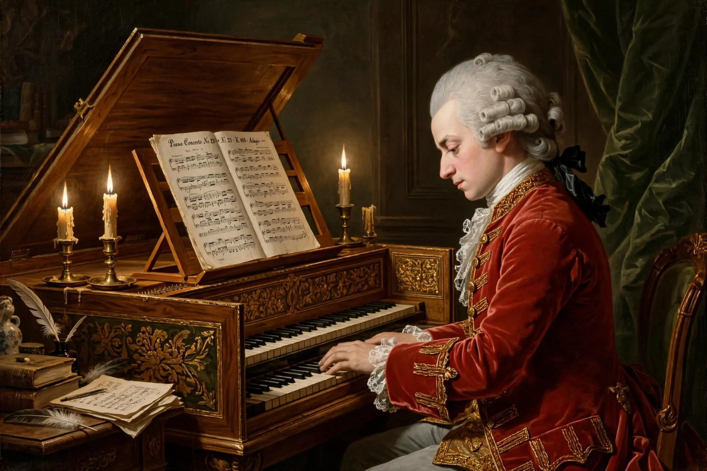

Wolfgang Amadeus Mozart
| Wolfgang Amadeus Mozart | |
|---|---|
| Born | 27 January 1756, Salzburg |
| Died | 5 December 1791 (aged 35), Vienna |
| Occupation | Composer, musician |
| Works | More than 800 compositions: symphonies, operas, concertos, chamber and choral music |
Wolfgang Amadeus Mozart (27 January 1756 – 5 December 1791) was a prolific and influential composer of the Classical period. Born in Salzburg, in the Holy Roman Empire, he showed prodigious ability from his earliest childhood, composing from the age of five and performing before European royalty. During his final years in Vienna he composed many of his best-known symphonies, concertos and operas, and portions of the Requiem, which was largely unfinished at his early death at 35. He composed more than 800 works, of virtually every genre of his time, and is widely regarded as among the greatest composers in the history of Western music.

Early life
Mozart's father Leopold, a composer and teacher, recognised the talent of Wolfgang and his sister Maria Anna ("Nannerl") and took them on tours of European courts from 1762. The young Mozart met many leading musicians, including Johann Christian Bach in London, and absorbed their styles. After years in the service of the Prince-Archbishop of Salzburg, Mozart grew restless and finally settled in Vienna in 1781, breaking from his employer after a famous quarrel.
Vienna years
In Vienna, Mozart gained fame as a pianist and composer, married Constanze Weber in 1782, and collaborated with librettist Lorenzo Da Ponte on the operas The Marriage of Figaro (1786), Don Giovanni (1787) and Così fan tutte (1790). His finances swung between success and difficulty; he sought commissions and pupils and gave subscription concerts. In his final year, 1791, he produced the opera The Magic Flute, the clarinet concerto, and began the Requiem in D minor, commissioned anonymously by Count Franz von Walsegg.
Death and legacy
Mozart died on 5 December 1791 after a short illness; the cause has never been established with certainty, and theories range from rheumatic fever to poisoning — the poisoning story, implicating rival composer Antonio Salieri, is not supported by evidence. The Requiem was completed by his pupil Franz Xaver Süßmayr. Mozart's music, catalogued by Ludwig von Köchel (the "K." numbers), epitomises Classical clarity, balance and emotional range, and influenced generations, notably the young Ludwig van Beethoven.